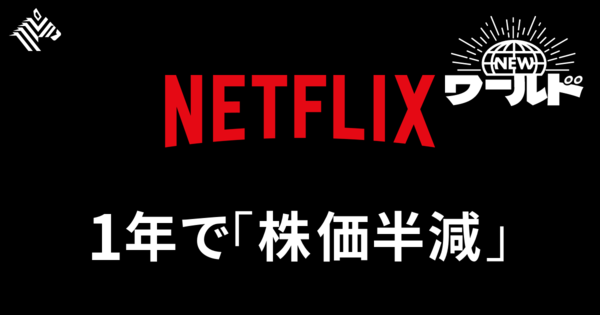

01【必読】要確認！AIサイバー攻撃は「ここを押さえろ」
発行日時：2026年10月23日 05:30:02 JST
あなたに関係ありそうな理由
賃貸管理でも、会計・入居者対応・取引先との連絡などを支えるシステムの停止は業務に響きます。AI製品の選定より先に、何を守り、どこで人が判断するかを整理する視点が役立ちます。
概要
生成AIを使った攻撃では、標的のシステムを調べ、既知の弱点を探し、侵入を試す作業の一部を自動化できる。記事は、攻撃者の作業が速くなるほど、企業側が弱点の影響を調べて修正するまでの猶予が縮むと説明する。英国の国家サイバーセキュリティセンターも、AIが攻撃対象の調査や脆弱性を突くプログラムの作成を効率化し、脆弱性公表から悪用までの時間を短くし得ると評価している。この指摘は攻撃準備の手間が減る可能性を示すもので、すべての攻撃が成功することや人手が不要になることを意味しない。企業には既知の弱点を見つけて修正する日常の仕組みが引き続き求められる。限られた人員で、どの資産を先に守るかの優先づけも欠かせない。
研究例として、イリノイ大学のチームは、公開済みの脆弱性15件を再現した環境で、説明を与えられたGPT-4のエージェントが13件の攻撃に成功したと報告した。ただし、これは実験環境での結果であり、実際の企業への攻撃成功率や、攻撃時間がどれだけ短縮するかを示す数字ではない。記事は、国内の個別の情報漏えいにAIが使われたとも断定していない。一方、自然な日本語のフィッシング文面が作れるようになり、見た目だけで不審な連絡を見分けにくくなる点も挙げる。
防御に生成AIを入れれば解決するわけではない。通信をその場で止める仕組みには短時間で安定した判断が必要で、クラウド型AIの応答待ちや誤検知が、サービス停止につながる場合がある。通常のバックアップや更新を攻撃と誤認することもあり、すべてを人が確認する運用では処理量に限界がある。記事は対策を統治、資産とリスクの把握、防御、検知、対応、回復の各役割に分け、場面ごとに技術を選ぶ必要を示している。
具体策は、自社の機器・ソフト・データ・外部接続を棚卸しし、止まると困る業務と復旧判断の担当者を明らかにすること。既知の手口はルールで素早く止め、難しい通信だけ詳しく分析するなど、技術の役割も分ける。人がすべて承認するのではなく、現実的な工数で品質を担保し、AIエージェントに与える権限や接続先も管理する。表示コメントでは、攻撃は一度の成功でよい一方、防御は事業を止めずに続ける必要があるという非対称性が指摘されていた。
仕事や会話で使える一言
「新しい防御AIを入れる前に、止まると困る業務と、復旧を決める人を確認したいですね。」
NewsPicks原文を読む
02【直撃】配車アプリGO、自動運転時代の戦い方
発行日時：2026年10月23日 05:30:00 JST
あなたに関係ありそうな理由
不動産や賃貸管理では、地域の移動手段や駅からの距離が暮らしや物件の価値に関わります。車両そのものを持つ企業と、利用者をつなぐアプリのどちらが顧客接点を握るかを考える材料になります。
概要
配車アプリGOを運営するGOは、自動運転タクシーが現実になる時代に、車両を自社で保有するのではなく、利用者とタクシーをつなぐ配車基盤の役割を強めようとしている。記事では、Waymo、日本交通、GOが連携するロボタクシーの構想を紹介し、2027年ごろの運行開始と、まず100台規模での導入を目指す計画を伝える。自動運転車が走ることだけでなく、誰のアプリから予約され、どの会社が配車を管理するかが競争になる。
GOの配車アプリは全国で広く使われる一方、地域によって利用の浸透度に差がある。記事では全国の利用率が約3割であるのに対し、東京など大都市では8～9割に達すると説明される。今後、自動運転車を含む複数の車両が同じアプリに接続すれば、利用者は車種や運転方式を意識せずに移動手段を呼び出せる。GOはドライバーを雇って車両を走らせる会社ではなく、配車アプリの利用料や運行を支える仕組みから収益を得る立場を保とうとしている。
ただし、自動運転の普及がそのままGOの成長を意味するわけではない。Waymoは自社のアプリでも配車を受け付けており、利用者が車両メーカー側のアプリへ移れば、GOは顧客との接点を失う可能性がある。逆に、既存のタクシー会社や複数の自動運転車をまとめて呼べるなら、利用者にとっての利便性が増し、GOの配車基盤の価値が高まる。人が運転するタクシーの不足地域で、車両の供給をどう確保するかも事業の前提となる。
表示コメントでは、自動運転の技術だけでなく、地域交通の不足を補えるか、配車データや顧客接点を誰が握るのかが論点になっていた。今後見るべきなのは、予定通りに運行が始まるかだけではない。実際の利用件数、運行地域の拡大、車両を出す事業者との収益配分、アプリを通じて予約する利用者の割合も確認点になる。GOにとっては、車両を持たずに複数の運行主体を束ねる立場が、利用者と地域の双方に選ばれるかが問われている。都市部で高い利用率があることだけで、地方でも同じ使われ方をすると決まるわけではない。地域ごとの車両供給や移動需要に応じて、サービスが実際に機能するかを見ていく必要がある。地域差は残る。地域ごとに異なる。
仕事や会話で使える一言
「車が自動運転かどうかより、利用者がどの窓口から呼び、誰が配車を束ねるかが鍵ですね。」
NewsPicks原文を読む
03【王者失速】Netflixに一体何が起きているのか
発行日時：2026年10月23日 05:30:01 JST

あなたに関係ありそうな理由
顧客の時間を取り合うサービスでは、利用者数だけでなく、広告や有料会員から得る収益、作品への投資、競合との違いを一緒に見る必要があります。事業の成長鈍化を数字と戦略の両面から読む題材です。
概要
動画配信の大手Netflixで、売上の伸びが鈍り、市場の見方も変わっている。2026年7～9月期の売上高は前年同期比11.8％増だったが、次の四半期の会社予想は11.5％増となり、前年の17.6％増から伸びが落ちる見通しだ。売上自体は増えているものの、投資家が期待していた成長速度を維持できるのかが焦点になっている。記事は、株式時価総額が前年からほぼ半分になったことも挙げ、好調な企業が成長の踊り場で直面する評価の変化を示す。
競争相手は他の動画配信会社だけではない。YouTubeやTikTok、Instagramなど、短い動画や利用者投稿を含むサービスが、視聴者の限られた時間を奪い合う。Netflixは有料会員向けのシリーズや映画を企画・制作し、視聴を継続してもらうモデルを築いてきた。しかし、作品の制作費がかさみ、すべてがヒットするわけではない。記事では、コンテンツ部門の幹部交代や人員の約6％削減にも触れ、会社が体制を見直している状況を伝える。
広告事業にも計画の修正があった。Netflixは2026年の広告売上高を当初の30億ドルから27億ドルへ引き下げた。広告付きプランを広げても、広告主の獲得や広告配信の仕組みづくりが想定通り進まなければ、会員課金の伸びを補えない。ワーナー・ブラザース・ディスカバリーの買収をめぐる動きも、最終的に成立しなかった。成長を買収や新規収益源だけで補うのではなく、作品への投資が加入や視聴継続につながるかが問われる。
表示コメントでは、競合を配信企業だけでなく、可処分時間を奪うYouTubeやSNSまで広げて捉える意見が出ていた。制作会社の評価は、一本の大ヒットだけでなく、複数作品をどう組み合わせ、視聴者に選ばれ続けるかにも左右される。今後は売上の伸びに加えて、広告事業が計画を取り戻すか、会員が視聴を続けるか、作品の投資効率が改善するかを追いたい。成長率の鈍化だけで事業の強さを決めず、収益の中身と時間の競争を分けて見る必要がある。なお、次の四半期の数値は会社が示した見通しであり、確定した実績ではない。予測と実績を分けて、その後どの項目が想定に近づくかを確認したい。
仕事や会話で使える一言
「配信会社同士の比較だけでなく、視聴者の時間がどこへ移っているかを見たいですね。」
NewsPicks原文を読む
04トランプ氏、マスク氏がウクライナ向けスターリンクを回復と表明
発行日時：2026年10月23日 04:11:58 JST
あなたに関係ありそうな理由
災害時や海外事業では、通信手段の継続が現場の安全や判断に直結します。民間の衛星通信サービスが安全保障や重要インフラに組み込まれると、提供企業の判断が利用者へ及ぼす影響を考える必要があります。
概要
トランプ米大統領は、イーロン・マスク氏がウクライナ向けの衛星通信サービスを復旧させたと表明した。記事によると、Starlinkの通信が制限された後、ウクライナ軍の無人機運用や防空に支障が出ていた。トランプ氏はマスク氏と話したかどうかは明言しなかったが、米政府関係者はウォール・ストリート・ジャーナルに、両者の協議後にサービスが通常に近い状態へ戻ったと説明した。一方、ゼレンスキー大統領は全面的な復旧ではないと述べている。
Starlinkは民間企業が運営する衛星通信網で、ウクライナでは軍事・民生の双方を支える通信手段として使われてきた。地上の通信設備が損傷する状況でも、端末と衛星を通じて連絡を保てることが利点だ。今回の経緯は、サービスの提供範囲や通信速度が変わると、現場の部隊や作戦に影響することを示す。政府が運用する通信網ではなく企業のサービスを使う場合、契約条件だけでなく、誰が利用の継続や制限を決めるのかも重要になる。
記事の報道内容には、技術的な説明に関する留保もある。東京大学の航空宇宙工学の専門家は、問題となったのは通信容量というより速度の制限だった可能性や、Starlinkと軍事向けのStarshieldが混同されている可能性を指摘した。したがって、通信が全面的に遮断された、あるいは完全に復旧したと単純化して断定するのは適切ではない。米政府関係者の説明、ウクライナ政府の発言、技術専門家の見方を区別して把握したい。
表示コメントでは、通信サービスの民間依存が戦場の作戦や政策判断に及ぼす影響と、報道で使われるサービス名や制限内容を正確に確かめる必要が論じられていた。今後は、どの地域でどのサービスが使えたのか、通信速度や容量の制限がいつどう変わったのか、代替手段があるのかを追うことが重要だ。衛星網を運営する企業の意思決定が、政府間交渉や現場の安全に直結する状況では、通信の可用性をどう担保するかが大きな課題となる。大統領の発表、米政府関係者の説明、ウクライナ側の発言、専門家の解釈は、情報源も確かさも異なる。どの発言がどの時点の状況を指しているかを分けて読む必要がある。複数の説明を照合したい。
仕事や会話で使える一言
「復旧したかどうかだけでなく、どの地域で何の通信が使えたのかを分けて確認したいですね。」
NewsPicks原文を読む
05佐川急便、個人情報最大5323万件流出の可能性 9月末の不正アクセス
発行日時：2026年10月23日 16:14:47 JST
あなたに関係ありそうな理由
賃貸管理では入居者・所有者・取引先の情報を扱い、委託先やサービスとの連携もあります。漏えいの規模だけでなく、情報の種類、初動、利用者への説明、再発防止をどう確認するかが実務に関わります。
概要
佐川急便は、不正アクセスにより最大5323万件の個人情報が外部へ流出した可能性があると公表した。対象には荷送人と荷受人の氏名、住所、電話番号、メールアドレスなどが含まれ、会員IDも漏えいしたおそれがある。クレジットカード情報やパスワードは含まれていないと説明している。被害件数は確定した流出件数ではなく、対象となったデータの最大規模を示す。調査で何が実際に持ち出されたかを確認する必要がある。会社が示した「可能性のある件数」と、外部への流出が確定した件数は区別しなければならない。情報の種類や実際の範囲は、調査結果の更新によって変わる可能性がある。顧客への案内では、確認済みの事実と調査中の情報を分けて伝えることも必要になる。
不正アクセスが発生したのは9月末で、会社はサービスを一時停止して調査や対策を進めた後、再開した。発生から公表までに時間があり、記事時点では原因や攻撃者の特定、対象者への連絡状況がすべて明らかになっていたわけではない。物流サービスでは、送り状の情報や会員情報が注文・配送のために蓄積される。顧客データが漏れると、会社だけでなく荷送人や受取人にも、詐欺メールや電話による二次被害への警戒が必要になる。
記事が伝えるのは、最大で5323万件が漏れた可能性と、カード情報・パスワードは含まれないという会社の説明である。これだけで二次被害が起きていないと結論づけることはできない。住所、電話、メールなどの組み合わせは、本人になりすました連絡や、配送を装った詐欺に悪用されるおそれがある。コメントでは、利用者が不審な連絡を見分ける負担や、公表のタイミング、原因究明の難しさが論点になっていた。
同じような情報を扱う組織が見るべき点は、アクセス制御やログ監視だけでなく、漏えいが疑われた場合の調査と連絡を迅速に進められるかだ。委託先や連携サービスを含むデータの流れを把握し、どの情報がどこに保存され、誰がアクセスできるかを確認する必要がある。今後は確定した流出範囲、対象者への通知、二次被害の有無、再発防止策を追いたい。事故後の説明では、可能性と確認済みの事実を分けて伝えることが信頼の回復につながる。
仕事や会話で使える一言
「件数だけでなく、漏れた情報の組み合わせと、対象者への連絡状況を確認したいですね。」
NewsPicks原文を読む